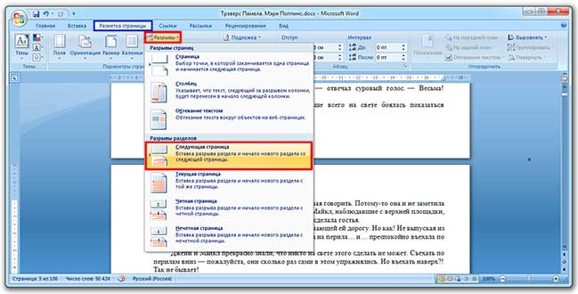

Удаление нумерации в Word
В этом уроке я покажу, как убрать нумерацию страниц в Ворде. Мы научимся удалять их несколькими способами: как со всего документа, так и только с определенных листов (например, с титульного).
Инструкция подходит для всех современных версий программы Microsoft Word (2007, 2010, 2013, 2016 и 2019).
Со всех страниц сразу
Способ 1: через «Вставка»
- Переходим в раздел «Вставка» в верхнем меню программы и щелкаем по пункту «Номер страницы».
- Из списка выбираем «Удалить номера страниц».
Вот и всё – нумерация страниц удалена со всего документа!
Способ 2: через колонтитулы
Колонтитул — это пустое поле документа вверху и внизу каждого листа. Оно не предназначено для печати текста, а содержит дополнительную информацию: название произведения, имя автора, главу/параграф, дату и т. п.
Чтобы его очистить, открываем раздел «Вставка» и нажимаем на надпись «Нижний» или «Верхний колонтитул» (в зависимости от того, где проставлены цифры). И в меню выбираем «Удалить».
А можно было сделать и по-другому: просто щелкнуть два раза левой кнопкой по любому из них, стереть цифру, после чего нажать на красный квадрат с крестиком «Закрыть окно» (вверху справа).
С титульного листа
Способ 1: через «Вставка»
1. Заходим в меню «Вставка» и жмем на нижний или верхний колонтитул. Из списка выбираем «Изменить».
2. Откроется раздел «Конструктор» в верхней части программы. Здесь необходимо поставить галочку на пункт «Особый колонтитул для первой страницы».
3. Нажимаем на красный квадрат с крестиком «Закрыть окно» (справа).
Способ 2: через «Макет»
Открываем вкладку «Макет» или «Разметка» и справа от названия раздела «Параметры» нажимаем на значок со стрелочкой.
Переходим во вкладку «Источник бумаги» и в разделе «Различать колонтитулы» ставим галочку напротив надписи «первой страницы».
Настройка номеров
Иногда нужно сделать так, чтобы нумерация начиналась не с цифры 1, а с какой-то другой (например, со второй). Для этого переходим во вкладку «Вставка», жмем «Номер» и в открывшемся меню выбираем «Формат».
В окошке щелкаем по пункту «начать с», печатаем цифру 2 или другую, с которой должно начинаться исчисление, и нажимаем ОК.
А если нужно сделать с третьего листа или еще как-то хитро, выполняем следующее:
1. Вставка → Номер → Удалить номера.
2. Ставим курсор в самое начало того листа, с которого должна начинаться нумерация.
Если с третьего, значит, щелкаем мышкой в самом его начале — перед первой буквой первого слова или заголовка.
3. Открываем вкладку «Макет» или «Разметка», нажимаем на «Разрывы» и выбираем «Следующая».
Скорее всего, после этого внешне ничего не изменится. Это обычно дело — так и должно быть.
4. Открываем редактирование того колонтитула (верхнего или нижнего), где будет стоять цифра. Для этого просто щелкаем по нему два раза левой кнопкой мыши.
Если вы все сделали верно, то вверху будет написано что-то вроде Нижний колонтитул –Раздел 2-
5. Вверху программы, в Конструкторе, будет подсвечен пункт «Как в предыдущем разделе». Вот ее нужно «отжать», то есть щелкнуть по ней один раз левой кнопкой мышки, чтобы она стала обычного (не оранжевого) цвета.
И убираем птичку с пункта «Особый», если она установлена.
6. Там же, в Конструкторе, проставляем номера — слева будет соответствующая надпись.
Если нужно их настроить (например, чтобы первой была единица), снова нажимаем на «Номер страницы» и выбираем «Формат». Затем в окошке щелкаем по «начать с» и ставим нужную цифру.
7. Закрываем Конструктор, нажав на «Закрыть» вверху.